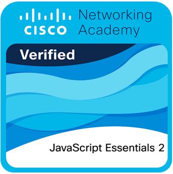
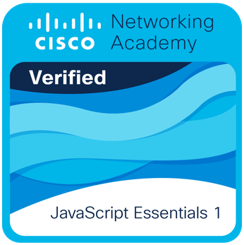
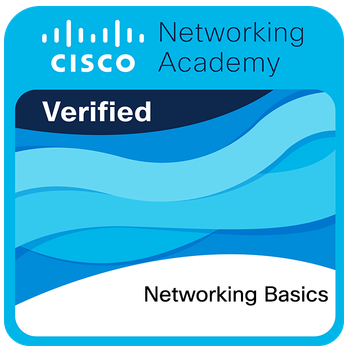

Xin chào, mình là
Mình là người đam mê Machine Learning và Data Mining, thích khai thác tri thức từ dữ liệu và áp dụng trí tuệ nhân tạo vào thực tế.
Mình có thể giúp bạn làm gì?
- Phân tích & khai phá dữ liệu: Xử lý, trích xuất thông tin giá trị từ dữ liệu lớn bằng Data Mining & HUIM.
- Xây dựng mô hình Machine Learning: Huấn luyện, đánh giá mô hình cho bài toán phân loại, dự đoán, tối ưu.
- Trực quan hóa dữ liệu: Biến dữ liệu phức tạp thành dashboard & insight dễ hiểu, hỗ trợ ra quyết định.
- Nghiên cứu thuật toán thông minh: Tối ưu hóa bằng ACO, HUOP-ACO, hoặc các thuật toán tiến hóa.
- Hợp tác nghiên cứu AI: Sẵn sàng tham gia hoặc cố vấn dự án liên quan đến AI & phân tích dữ liệu.
Dự án nổi bật
Chatbot – Trợ lý ảo cá nhân
Một hệ thống chatbot ứng dụng NLP để hiểu ngữ cảnh và phản hồi tự nhiên, đóng vai trò như một “y tá ảo” hoặc trợ lý cá nhân. Dự án tập trung vào huấn luyện mô hình hội thoại, phân tích cảm xúc và gợi ý hành động thông minh.
Python NLP Machine LearningHUOP-ACO
Thuật toán tối ưu hóa đàn kiến (Ant Colony Optimization) áp dụng trong khai thác các tập mục có độ hữu ích và chiếm dụng cao (High Utility Occupancy Patterns). Dự án tập trung vào cải thiện tốc độ hội tụ và hiệu quả tìm kiếm trong dữ liệu lớn.
Data Mining ACO OptimizationHiding HOUP (WIP)
Nghiên cứu hướng “Privacy-Preserving Utility Mining”, Private!!!
Privacy HUIM Data SecurityChứng chỉ

📜 JavaScript Essentials 2
Chứng chỉ nâng cao từ Cisco NetAcad giúp mình hiểu sâu hơn về lập trình hướng đối tượng, xử lý lỗi, và thao tác bất đồng bộ trong JavaScript. Qua khóa học này, mình đã xây dựng được nền tảng vững chắc để phát triển ứng dụng web hiện đại.
📅 Cấp ngày: 15/10/2025

📜 JavaScript Essentials 1
Khóa học giới thiệu nền tảng lập trình JavaScript: biến, hàm, vòng lặp và tương tác DOM. Đây là chứng chỉ giúp mình tự tin tạo trang web động, đồng thời hiểu rõ logic lập trình và cách ngôn ngữ này hoạt động trong trình duyệt.
📅 Cấp ngày: 23/09/2025

📜 Networking Basics
Chứng chỉ cung cấp kiến thức cơ bản về mạng máy tính: cách hoạt động của IP, thiết bị mạng, định tuyến và bảo mật. Khóa học này giúp mình hiểu rõ hơn về hạ tầng kết nối internet và cách các hệ thống giao tiếp với nhau an toàn, hiệu quả.
📅 Cấp ngày: 12/09/2025
Liên hệ
Email: stazz4567@gmail.com
GitHub: github.com/NguyenDuyPhuc3001